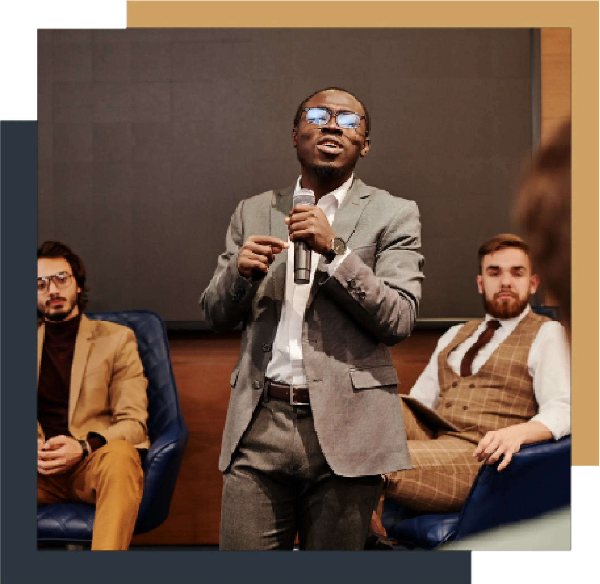

Conference Countdown
Secretariat's Address
We are delighted and honored to welcome you to the first JIS Model UN
on-campus. We are incredibly grateful for the chance to be here with
our amazing team as we work to lay the groundwork for this MUN and
hopefully many others to come.
My dear colleagues, students, and delegates. We are all rapidly
approaching the crisis point of the culmination of many catastrophes
at once, as the entire world is rapidly becoming more and more aware
and as scientists and historians have been warning for decades.
Every single one of our homes is confronted with the global challenge
of a conflict that is unprecedented—more horrifying, intricate, and
interconnected than ever before. All the unresolved conflicts from
earlier generations are now our responsibility, and we need to prevent
them from passing to the next generation before it's too late for
them, too. We are not the first people to go through hardship, lose
ourselves in a catastrophe, or fear that the future will never come.
We must do everything in our power to be the last, though, out of
respect for every soul that hasn't yet had the chance to live. That is
why the UN was established, and that is why we are assembling at this
conference right now to try to find a solution. to dig up the rotten
roots that society has tried to bury, forgetting that rot always finds
a way to spread and that the only way to treat it is to get rid of the
infection.
To that end, I sincerely hope that each of you will give this event
your all and leave not only convinced that this world can indeed
change for the better in order to heal and break free from its chains,
but also determined to see it through.
Regards,
JIS MUN 2023 Team

Committees
chevron_left
chevron_right
FAQs
Should I sign up as a delegate or a chair?
If this is your first time attending an MUN sign up as a delegate.
A chair will be responsible to moderate a committee and would need
prior MUN experience.
How much does it cost?
It will cost 150 SAR per person.
Will food be provided?
Yes.
How should I prepare for an MUN?
We recommend all delegates to read this delegate guide. It
is also helpful to watch MUN procedures to see it all in action.
Don't forget to do your research!
What are the timings of the conference?
17th & 18th February 2023. For more
information on the exact timings check out the
Agenda.